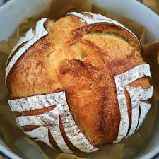

Sourdough

Pinch off a perfect loaf for the family
This bread is the best bread. It's so good. Superman eats this bread.
Made with bread ingredients, which are listed below. You mix in water, let
it rot a bit and then burn it! Pure magic.
Ingredients
- 500g FLour
- 450ml Water
- A pinch of salt
- Dead skin fron your hands when you mix it
Steps
- Mix in the flour, water and salt.
- Let it rot for 12 hours.
-
When you can smell that tangy bacteria faeces smell, you're good to go!
- Burn the bastard in the oven like a witch from days of yore.
- Ta daa, bread!